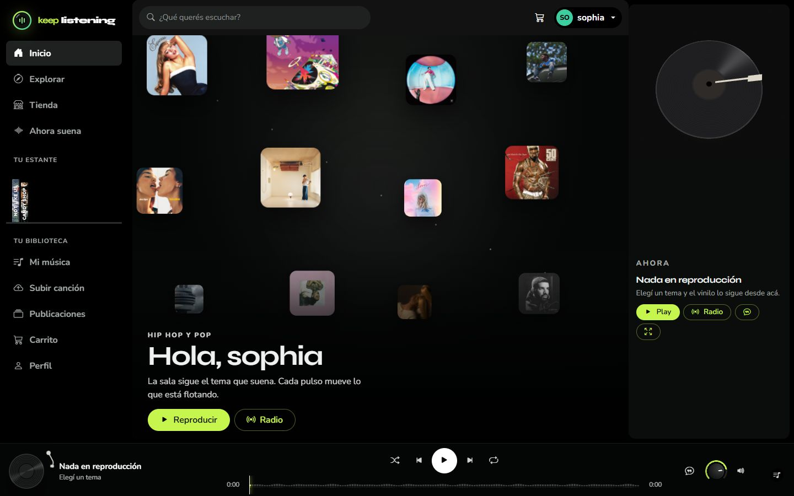
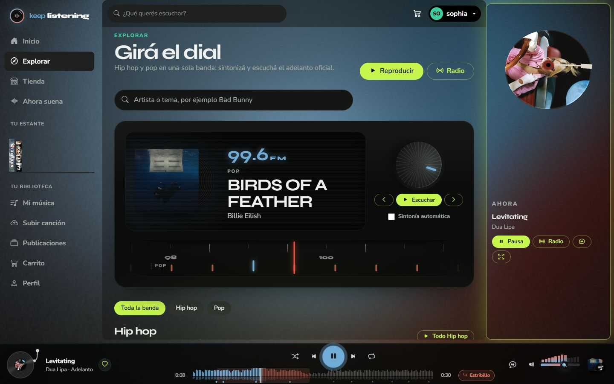
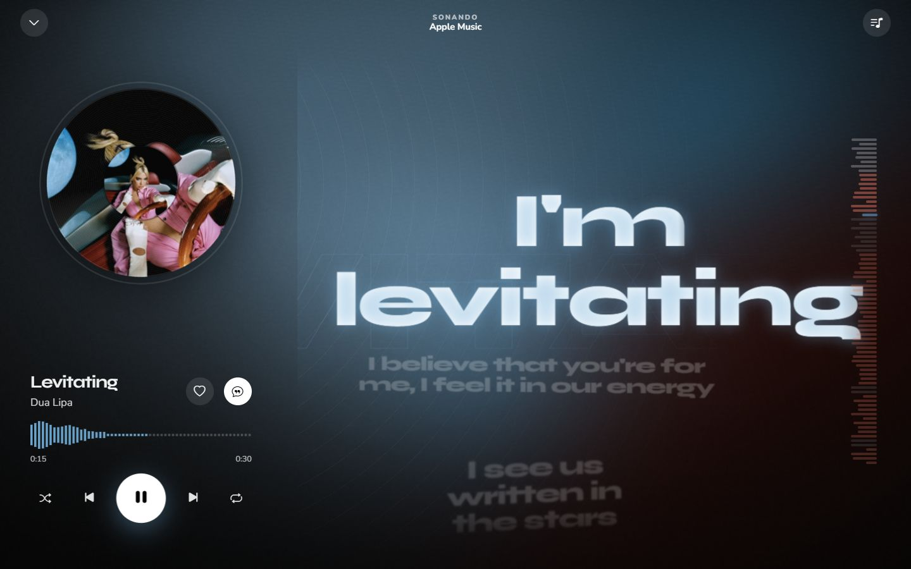
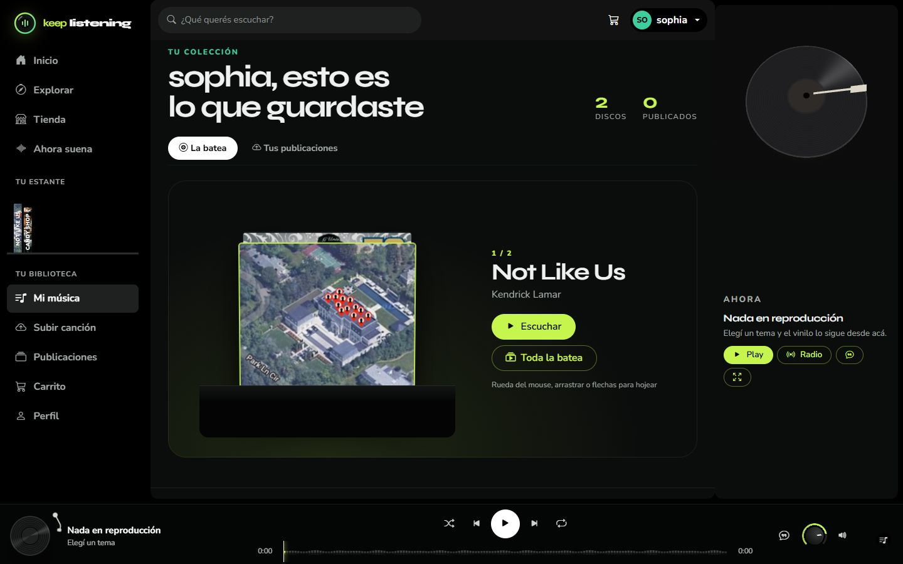
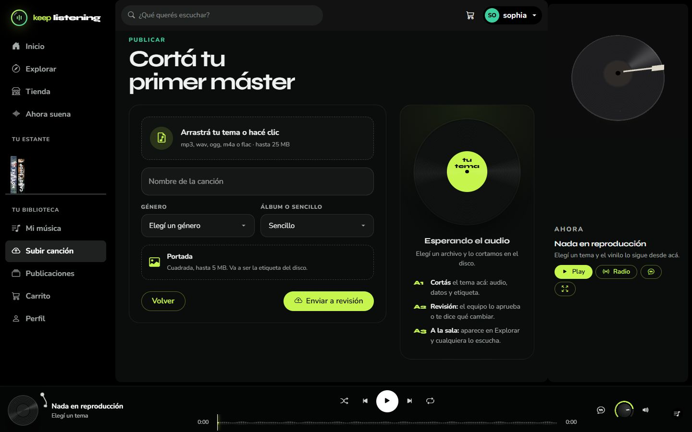
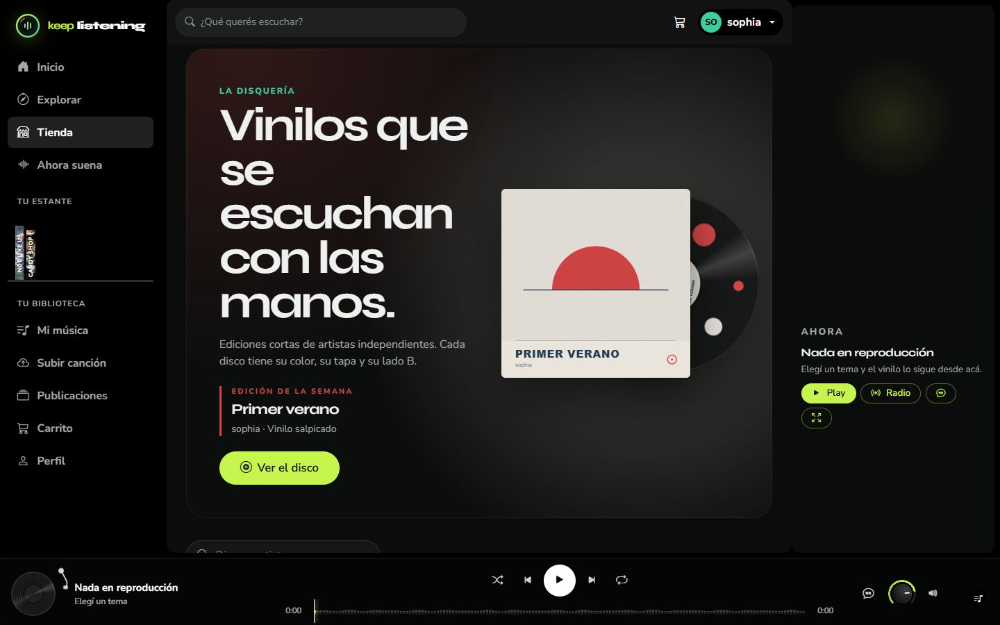
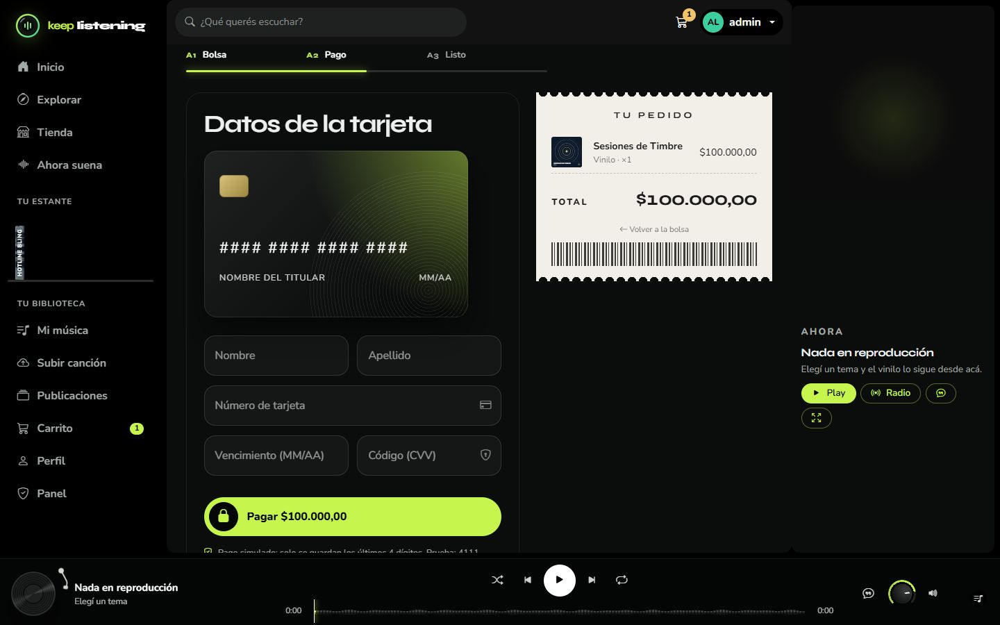
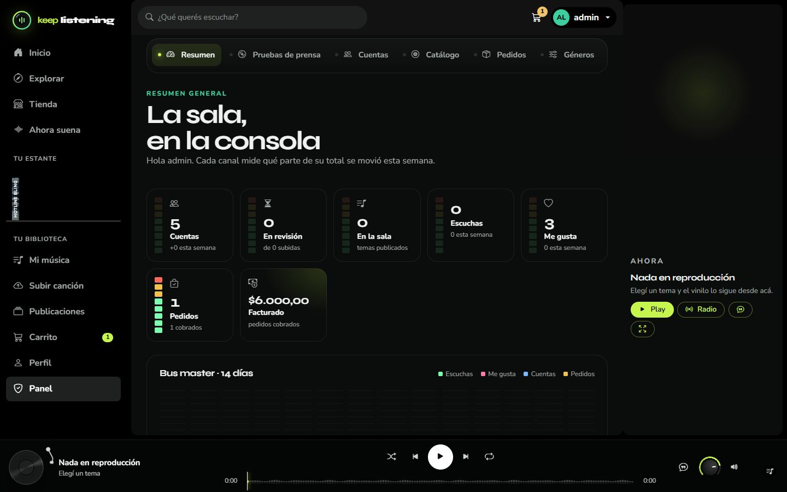

Informe de proyecto · versión final
Keep Listening
Plataforma web para escuchar, guardar, publicar y comprar música.
| Nombre del proyecto | Keep Listening |
|---|---|
| Integrantes | Sophia Benitez y Alí Pérez |
| Empresa encargada | TecnoPlus |
| Materia | Taller de Construcción de Software · 6.º año |
| Primera entrega | 24 de mayo de 2026 |
| Entrega final | 6 de noviembre de 2026 |
| Repositorio | github.com/Al1sao/keep-listening |
| Página publicada | keep-listening.onrender.com |
| Documentación web | al1sao.github.io/keep-listening |
TecnoPlus realiza páginas web personalizadas para cada cliente. Para nosotros es vital que los clientes se sientan escuchados y vistos, para que el producto final sea totalmente de su gusto. Buscamos facilitar el acceso a la tecnología con plataformas modernas e intuitivas, y trabajamos constantemente para mejorar nuestros servicios y adaptarnos a las nuevas necesidades del mercado.
Índice
- Análisis
- Requisitos de usuario
- Requisitos del sistema
- Casos de uso
- Diagrama de casos de uso
- Diagrama de clases
- Diagrama de entidad-relación
- Diagramas de secuencia
- Mapa de navegación
- Interfaces (UX/UI)
- Tecnologías utilizadas
- Cambios respecto de la primera versión
- Manual de usuario
1. Análisis
El cliente requiere una página web para acceder a música publicada. Para usarla, la persona se registra con nombre de usuario, correo electrónico y contraseña.
La página reproduce música y tiene un lugar donde guardar las canciones que el usuario elige (con su nombre y género). Cada usuario puede publicar canciones propias cargando el nombre, el género, si pertenece a un álbum o es un sencillo, y la portada. Lo que se publica pasa por la revisión de un administrador, que puede aprobarlo, devolverlo con un motivo, modificarlo o eliminarlo.
Los álbumes se pueden comprar en formato físico o digital. Cada uno muestra su información, fecha de lanzamiento y formato de disco. Lo elegido se guarda en un carrito y, para pagar, se piden los datos de la tarjeta: número, nombre y apellido del titular, vencimiento y código de seguridad.
Lo que se sumó durante el desarrollo: para que la plataforma tuviera música real desde el primer día, se integró una selección de hip hop y pop con los adelantos oficiales de 30 segundos de Apple Music; las letras sincronizadas se obtienen de LRCLIB y se muestran en pantalla completa al ritmo del tema; el fondo de la página toma los colores de la portada y se mueve con la música; y se agregó un panel de administración propio con estadísticas, gestión de cuentas, catálogo, pedidos y géneros.
2. Requisitos de usuario
| N.º | El usuario puede… |
|---|---|
| 1 | Registrarse en la plataforma. |
| 2 | Iniciar sesión con nombre de usuario (o correo) y contraseña. |
| 3 | Cargar su correo electrónico al registrarse. |
| 4 | Reproducir música publicada en la página. |
| 5 | Guardar canciones favoritas en una lista personal. |
| 6 | Ver el nombre y el género de cada canción guardada. |
| 7 | Publicar canciones creadas por sí mismo. |
| 8 | Cargar los datos de la canción publicada: nombre, género, álbum o sencillo, y portada. |
| 9 | Ver los álbumes disponibles. |
| 10 | Comprar álbumes en formato físico o digital. |
| 11 | Agregar productos al carrito de compras. |
| 12 | Completar la compra ingresando los datos de la tarjeta. |
| 13 | Recibir el control de un administrador sobre lo que publica. |
| 14 (nuevo) | Ver la letra de la canción sincronizada con la música. |
| 15 (nuevo) | Buscar artistas y temas mientras escribe. |
| 16 (nuevo) | Consultar sus compras y el estado de cada pedido. |
| 17 (nuevo) | Editar su perfil (nombre, foto, biografía y contraseña) y tener una página pública de artista. |
| 18 (nuevo) | Ver el motivo cuando una publicación es devuelta, para corregirla. |
| 19 (nuevo) | Escuchar los discos que compró, desde "Tus discos" en Mi música. |
3. Requisitos del sistema
Funcionales
| N.º | El sistema debe… |
|---|---|
| 1 | Permitir registrar usuarios, validando correo único y contraseña segura (8 caracteres o más, con mayúscula y número). |
| 2 | Permitir iniciar y cerrar sesión, y bloquear temporalmente el acceso tras varios intentos fallidos. |
| 3 | Reproducir música con cola, aleatorio, repetición, volumen y barra de progreso, sin cortarse al navegar. |
| 4 | Permitir guardar y quitar canciones de la lista personal. |
| 5 | Permitir publicar canciones, validando tipo y tamaño de audio (25 MB) e imagen (5 MB), y dejarlas pendientes de revisión. |
| 6 | Mostrar los álbumes disponibles con filtros por género y formato. |
| 7 | Gestionar un carrito por usuario (agregar, cambiar cantidades, quitar). |
| 8 | Procesar la compra: validar la tarjeta, crear el pedido, descontar stock y registrar el pago guardando solo los últimos 4 dígitos. |
| 9 | Permitir al administrador aprobar, devolver con motivo, modificar o eliminar publicaciones. |
| 10 | Permitir al administrador gestionar cuentas, catálogo, pedidos y géneros. |
| 11 | Mostrar la letra sincronizada de cada tema cuando esté disponible. |
En la primera versión los requisitos funcionales 5 y 6, y 7 y 8, estaban repetidos. En esta versión se corrigieron y se completaron.
No funcionales
| Facilidad de uso | Navegación siempre visible (menú, buscador y reproductor) y mensajes claros en cada formulario. |
|---|---|
| Protección de datos | Contraseñas con hash, protección CSRF en todos los formularios, permisos por rol, límite de intentos de login y política de seguridad de contenido (CSP). |
| Rendimiento | Consultas optimizadas, caché de la selección musical, paginación, CSS minificado y animaciones con un único ciclo de dibujo. |
| Compatibilidad | Diseño adaptable a computadora, tablet y celular. |
| Calidad | 115 pruebas automáticas que cubren registro, login, favoritos, publicación, compra, panel y seguridad. |
4. Casos de uso
| Caso de uso | Actor | Descripción |
|---|---|---|
| 1. Registro de usuario | Usuario | Elige "Registrarse", completa usuario, correo y contraseña. El sistema valida los datos, crea la cuenta e inicia la sesión. |
| 2. Inicio de sesión | Usuario | Ingresa usuario (o correo) y contraseña. El sistema verifica los datos y le da acceso. |
| 3. Reproducción de música | Usuario | Elige un tema. El sistema trae el adelanto, lo reproduce, registra la escucha y puede mostrar la letra sincronizada. |
| 4. Guardar canciones | Usuario | Marca el corazón de un tema. El sistema lo guarda en su lista personal (Mi música). |
| 5. Publicar canciones | Usuario | Carga audio, nombre, género, tipo y portada. El sistema la deja pendiente para revisión. |
| 6. Compra de álbumes | Usuario | Elige un álbum y su formato, lo agrega al carrito, completa la tarjeta y confirma. El sistema crea el pedido y el pago. |
| 7. Administración de contenido | Administrador | Revisa lo publicado y lo aprueba, lo devuelve con un motivo, lo modifica o lo elimina. |
| 8. Gestión de la tienda (nuevo) | Administrador | Crea y edita discos del catálogo, administra géneros y avanza el estado de los pedidos. |
| 9. Gestión de cuentas (nuevo) | Administrador | Busca usuarios, cambia su rol o los bloquea indicando un motivo. |
5. Diagrama de casos de uso
flowchart LR U((Usuario)) A((Administrador)) U --- R[Registrarse] U --- L[Iniciar sesión] U --- P[Reproducir música] P -.incluye.-> LE[Ver letra] U --- G[Guardar canción] U --- PU[Publicar canción] U --- V[Ver álbumes] U --- C[Comprar álbum] C -.incluye.-> CA[Gestionar carrito] C -.incluye.-> PA[Realizar pago] A --- VC[Revisar canciones] VC -.extiende.-> AP[Aprobar / devolver] VC -.extiende.-> EL[Modificar / eliminar] A --- GT[Gestionar tienda y pedidos] A --- GC[Gestionar cuentas]
6. Diagrama de clases
Las clases son los modelos de Django del proyecto (apps usuarios, musica y tienda).
classDiagram
direction TB
class Usuario {
username
email
rol: USUARIO | ADMIN
avatar
biografia
bloqueado
motivo_bloqueo
}
class Genero { nombre; slug }
class Album {
titulo
tipo: ALBUM | SENCILLO
tipo_disco: CD | VINILO | CASSETTE
fecha_lanzamiento
precio_digital
precio_fisico
stock_fisico
publicado
precio_por_formato()
}
class Cancion {
titulo
tipo
portada
archivo_audio
estado: PENDIENTE | APROBADA | RECHAZADA
motivo_rechazo
reproducciones
como_pista()
}
class Favorito { fecha_agregado }
class MeGusta { pista_id; titulo; artista; fecha }
class Reproduccion { fecha }
class Carrito { resumen(); vaciar() }
class CarritoItem { formato; cantidad; precio_unitario }
class Pedido { numero; total; estado }
class PedidoItem { formato; cantidad; precio_unitario }
class Pago { nombre_titular; ultimos_digitos; marca; estado; procesar_pago() }
Usuario "1" --> "*" Album : publica
Usuario "1" --> "*" Cancion : sube
Genero "1" --> "*" Album
Genero "1" --> "*" Cancion
Album "1" --> "*" Cancion : contiene
Usuario "1" --> "*" Favorito
Cancion "1" --> "*" Favorito
Usuario "1" --> "*" MeGusta
Usuario "1" --> "*" Reproduccion
Usuario "1" --> "1" Carrito
Carrito "1" --> "*" CarritoItem
CarritoItem "*" --> "1" Album
Usuario "1" --> "*" Pedido
Pedido "1" --> "*" PedidoItem
Pedido "1" --> "1" Pago
7. Diagrama de entidad-relación
Para que se lea bien, se divide en dos partes: usuarios y música, y la tienda. USUARIO y ALBUM aparecen en las dos.
Usuarios y música
erDiagram
USUARIO ||--o{ CANCION : sube
USUARIO ||--o{ ALBUM : publica
GENERO ||--o{ ALBUM : clasifica
GENERO ||--o{ CANCION : clasifica
ALBUM |o--o{ CANCION : contiene
USUARIO ||--o{ FAVORITO : guarda
CANCION ||--o{ FAVORITO : es
USUARIO ||--o{ REPRODUCCION : escucha
CANCION ||--o{ REPRODUCCION : registra
USUARIO ||--o{ MEGUSTA : marca
USUARIO {
int id PK
string username UK
string email UK
string rol
bool bloqueado
}
GENERO {
int id PK
string nombre UK
}
ALBUM {
int id PK
int artista_id FK
int genero_id FK
string titulo
string tipo_disco
decimal precio_fisico
int stock_fisico
}
CANCION {
int id PK
int artista_id FK
int genero_id FK
int album_id FK
string titulo
string estado
}
FAVORITO {
int usuario_id FK
int cancion_id FK
}
REPRODUCCION {
int usuario_id FK
int cancion_id FK
datetime fecha
}
MEGUSTA {
int usuario_id FK
string pista_id
string titulo
}
Tienda
erDiagram
USUARIO ||--o| CARRITO : tiene
CARRITO ||--o{ CARRITO_ITEM : contiene
ALBUM ||--o{ CARRITO_ITEM : agregado
USUARIO ||--o{ PEDIDO : realiza
PEDIDO ||--|{ PEDIDO_ITEM : incluye
ALBUM ||--o{ PEDIDO_ITEM : vendido
PEDIDO ||--|| PAGO : se_paga_con
CARRITO {
int id PK
int usuario_id FK
}
CARRITO_ITEM {
int carrito_id FK
int album_id FK
string formato
int cantidad
decimal precio_unitario
}
PEDIDO {
int id PK
int usuario_id FK
string numero UK
decimal total
string estado
}
PEDIDO_ITEM {
int pedido_id FK
int album_id FK
string formato
int cantidad
}
PAGO {
int pedido_id FK
string ultimos_digitos
string estado
}
8. Diagramas de secuencia
Publicar canción
sequenceDiagram actor U as Usuario participant W as Página web participant B as Base de datos actor A as Administrador U->>W: Iniciar sesión W->>B: Verificar usuario B-->>W: Usuario válido U->>W: Subir canción (audio, datos, portada) W->>W: Validar tipo y tamaño W->>B: Guardar canción (PENDIENTE) A->>W: Revisar canción A->>W: Aprobar o devolver con motivo W->>B: Actualizar estado B-->>W: Confirmación W-->>U: Canción publicada (o motivo de devolución)
Comprar álbum
sequenceDiagram actor U as Usuario participant W as Página web participant C as Carrito participant P as Sistema de pago (simulado) participant B as Base de datos U->>W: Seleccionar álbum y formato W->>C: Agregar álbum U->>W: Ir a pagar W-->>U: Solicitar datos de tarjeta U->>W: Ingresar datos W->>P: Validar tarjeta (Luhn, vencimiento, código) P-->>W: Pago aprobado W->>B: Crear pedido, descontar stock y guardar pago (últimos 4 dígitos) W->>C: Vaciar carrito W-->>U: Compra realizada (número de pedido)
Reproducir música (nuevo)
sequenceDiagram actor U as Usuario participant N as Navegador participant W as Servidor (Django) participant AP as Apple Music participant LR as LRCLIB U->>N: Tocar un tema N->>W: Pedir el adelanto W->>AP: Traer el audio AP-->>W: Adelanto de 30 s W-->>N: Audio (y registra la escucha) N-->>U: Reproduce, dibuja la onda y anima el fondo U->>N: Abrir la letra N->>W: Pedir la letra W->>LR: Buscar letra sincronizada LR-->>W: Letra con tiempos W-->>N: Letra N-->>U: Letra al ritmo de la música
9. Mapa de navegación
flowchart LR I[Inicio] --> E[Explorar] I --> T[Tienda] I --> AS[Ahora suena / Letra] I --> REG[Registro] I --> LOG[Iniciar sesión] T --> FA[Ficha del álbum] FA --> CAR[Carrito] CAR --> PAG[Pago] PAG --> CONF[Confirmación del pedido] I --> MM[Mi música] I --> SUB[Subir canción] I --> PUB[Publicaciones] PUB --> NA[Nuevo álbum] I --> PER[Perfil] PER --> COM[Mis compras] PER --> PP[Página pública de artista] I --> PAN[Panel de administración] PAN --> P1[Resumen] PAN --> P2[Revisión de canciones] PAN --> P3[Cuentas] PAN --> P4[Catálogo] PAN --> P5[Pedidos] PAN --> P6[Géneros]
El menú lateral, el buscador y el reproductor están presentes en todas las pantallas. El panel solo aparece para administradores.
10. Interfaces (UX/UI)
El diseño sigue el concepto "Surco": todo gira alrededor del disco de vinilo (tocadiscos, bateas, tickets de disquería). Interfaz oscura con acento lima, tipografías Syne (títulos) y Nunito (texto). Mientras suena un tema, la página se vuelve translúcida y el fondo toma los colores de la portada.








11. Tecnologías utilizadas
| Tecnología | Para qué se usó |
|---|---|
| Python 3.10 o superior y Django 5.2 | Servidor: vistas, formularios, modelos, autenticación y panel. |
| SQLite | Base de datos en la computadora (archivo db.sqlite3; copia exportada en base_de_datos/keep_listening.sql). |
| PostgreSQL | Base de datos de la versión publicada: conserva cuentas y compras aunque el servidor se reinicie. |
| HTML (plantillas de Django) | Estructura de cada pantalla. |
| SCSS (Dart Sass) + Bootstrap 5 | Estilos modulares compilados a un único CSS. |
| JavaScript nativo | Reproductor, letras, animaciones, buscador y carrito sin recargar. Sin React ni jQuery. |
| Web Audio API y WebGL | Análisis del sonido (onda y pulso) y el fondo animado. |
| django-allauth | Inicio de sesión con Spotify, Apple Music, YouTube Music y SoundCloud (opcional). |
| WhiteNoise y Gunicorn | Servir archivos estáticos y el sitio fuera de desarrollo. |
| Docker y Docker Compose | Ejecución local en un solo comando, y la misma imagen se usa para publicar. |
| Render | Publicación de la página en internet (plan gratuito), configurada en render.yaml. Se actualiza sola con cada cambio subido a GitHub. |
| API de Apple Music (iTunes) y LRCLIB | Adelantos de 30 segundos y letras sincronizadas. |
| Git y GitHub | Control de versiones, entrega y publicación de la documentación (GitHub Pages). |
12. Cambios respecto de la primera versión
| Tema | Cambio |
|---|---|
| Música | Además de las canciones de los usuarios, se integró una selección curada con adelantos oficiales de Apple Music. |
| Letras | Nueva función: letra sincronizada en pantalla completa. |
| Administración | El administrador también gestiona cuentas, catálogo, pedidos y géneros, y ve estadísticas. |
| Publicación | Al devolver una canción se indica el motivo, visible para el autor. |
| Compras | Historial de pedidos con estados (pagado, enviado, entregado, cancelado) y control de stock. Lo comprado se escucha en "Tus discos" (Mi música); como los discos de la tienda son de artistas de prueba, cada tema suena con una muestra generada para ese tema. |
| Seguridad | Límite de intentos de login, política CSP y validación de archivos subidos. |
| Requisitos | Se corrigieron requisitos repetidos y se agregaron los nuevos (14 a 19). |
| Diseño | Rediseño completo con el concepto "Surco" y fondo que reacciona a la música. |
| Publicación | La página quedó publicada en Render con una base PostgreSQL, y la documentación en GitHub Pages. |
13. Manual de usuario
El manual de usuario está en un documento aparte: Manual_de_usuario_Keep_Listening.pdf (también en versión web). Explica cómo crear una cuenta, escuchar música, ver la letra, guardar canciones, publicar, comprar y usar el panel de administración.
Keep Listening · TecnoPlus · Sophia Benitez y Alí Pérez · Taller de Construcción de Software, 6.º año · 2026